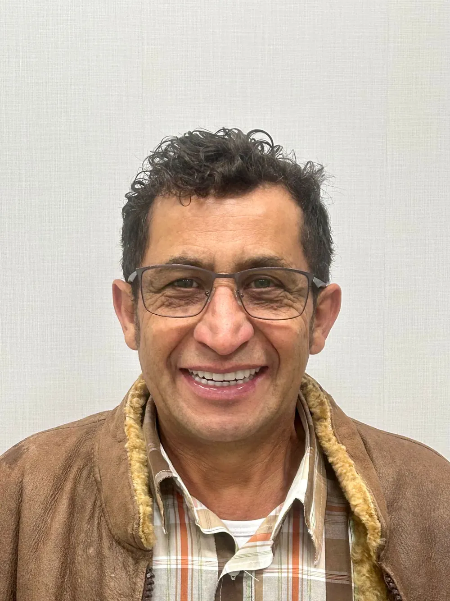
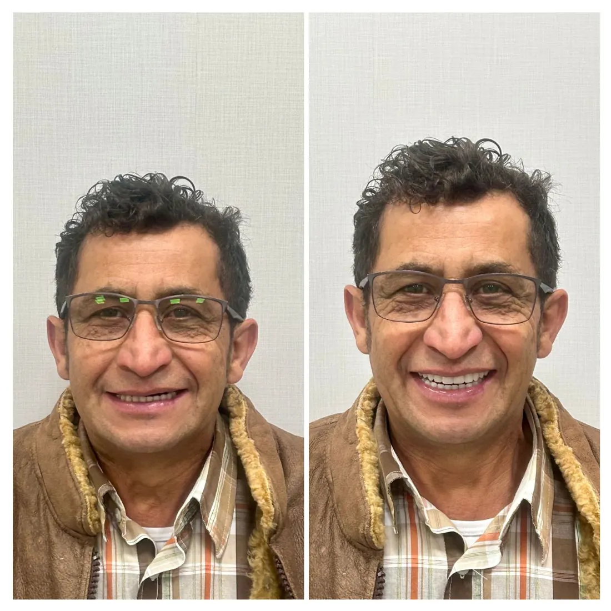
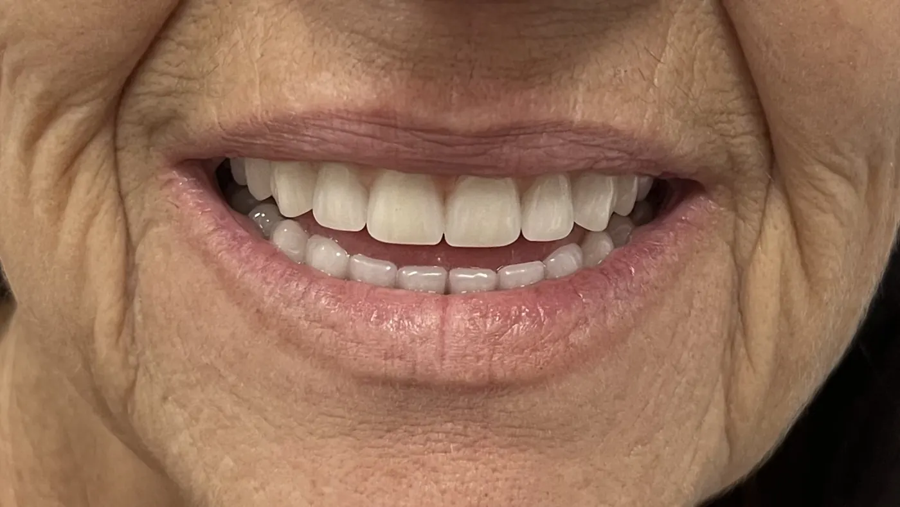
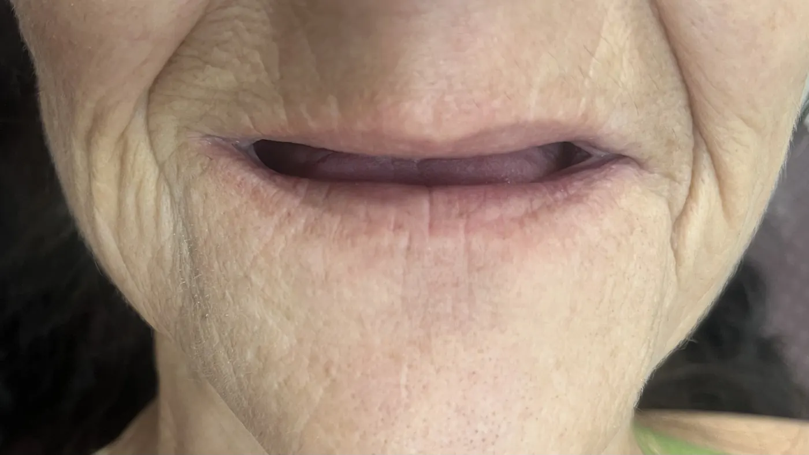
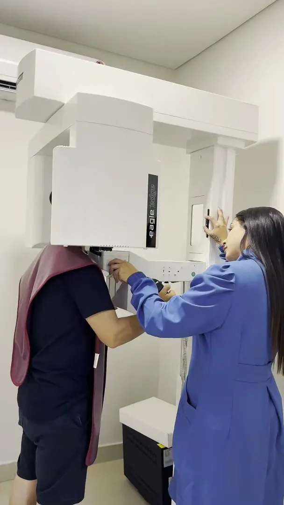
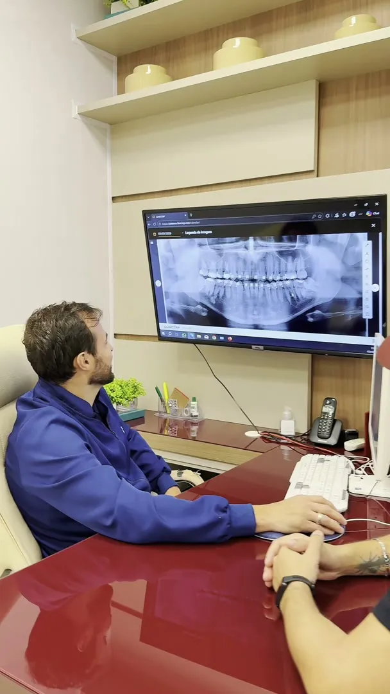

Tudo no mesmo lugar.
Raio-X panorâmico, tomografia computadorizada e scanner intraoral dentro da clínica. Você faz os exames aqui, sem precisar sair para outro endereço e voltar outro dia.
TomógrafoPanorâmicoScanner intraoral

Implantes e prótese protocolo · Mafra/SC
Voltar a comer o que você gosta, rir sem colocar a mão na frente da boca e aparecer nas fotos sem pensar duas vezes. Tudo começa com uma conversa e um planejamento feito para o seu caso.
Conheça o Instituto
O Instituto Lumière nasceu para ser o lugar onde você é ouvido antes de ser tratado. Um espaço pensado em cada detalhe para que a sua ida ao dentista seja leve, do cafezinho na recepção ao último retorno.
Aqui você encontra três consultórios equipados, centro cirúrgico exclusivo e diagnóstico por imagem no próprio local. Estrutura de alto padrão para o que importa de verdade: um tratamento seguro, previsível e feito com calma.
“Mais do que cuidar do sorriso, queremos que cada paciente se sinta percebido, ouvido e cuidado em cada detalhe.” Instituto Lumière
Do cafezinho na recepção ao centro cirúrgico
Por onde começar?
Cada sorriso tem uma história. Escolha a que mais se parece com a sua e fale com a nossa equipe. A gente explica com calma o que é possível no seu caso.

Com a prótese protocolo, uma arcada inteira de dentes fixos fica presa sobre implantes. Você não tira para dormir e volta a mastigar com firmeza.
Prótese protocoloO implante repõe a raiz e o dente, sem desgastar os vizinhos.
Implante dentário 03Nem sempre é o fim do caminho. O implante zigomático pode ser uma alternativa, quando bem indicado.
Implante zigomático 04Exame de imagem na hora para ver a posição do dente e planejar a extração com tranquilidade.
Extração de siso 05Alinhadores invisíveis ClearCorrect, facetas, coroas e clareamento.
Estética e ortodontiaVocê não está atrasado e não precisa ter vergonha. A gente começa pela conversa, explica cada etapa e respeita o seu tempo.
Quero começar pela conversaPor que o Lumière
Técnica, tecnologia e acolhimento no mesmo lugar. Porque um tratamento seguro começa muito antes da cadeira.
Agendar avaliaçãoRaio-X panorâmico, tomografia computadorizada e scanner intraoral dentro da clínica. Você faz os exames aqui, sem precisar sair para outro endereço e voltar outro dia.
Cada caso é estudado em três dimensões, a partir da sua tomografia. O procedimento segue o que foi planejado, com mais previsibilidade, mais segurança e menos improviso.
Antes do procedimento, perguntamos do que você gosta de ouvir. No dia, quando você entra na sala, ela já está tocando. Pode parecer um pequeno gesto. Para quem está ansioso, faz toda a diferença.
Especialistas em diferentes áreas da odontologia trabalhando juntos no seu caso, com centro cirúrgico exclusivo e um olhar que enxerga a pessoa inteira, não só o dente.

Paciente real · Prótese protocolo
A dentadura que solta. Os dentes que você vive remendando. A notícia de que não tem osso suficiente. Nenhuma dessas situações é, por si só, o fim do caminho.
Na prótese protocolo, os dentes ficam parafusados sobre implantes: firmes para mastigar, falar e sorrir. Quando o osso é pouco, técnicas como o implante zigomático podem ser uma alternativa. Quem define o caminho é a avaliação, com tomografia e planejamento.
Quero saber se é o meu casoResultados reais
Arraste a linha sobre a foto para comparar o antes e o depois. Imagens de pacientes do Instituto, publicadas com autorização. Cada caso é único e o resultado varia de pessoa para pessoa.


Já ouviu que não tinha osso suficiente para implantes? Isso nem sempre é o fim da conversa.
Com tomografia e planejamento, é possível avaliar alternativas que talvez ninguém tenha te apresentado.
Quero uma segunda opiniãoTecnologia e precisão
Um bom tratamento começa muito antes da primeira intervenção. Começa com um diagnóstico preciso.


Como funciona
Ouvimos o que te incomoda e fazemos os exames de imagem aqui mesmo, na clínica.
Você entende o seu caso na tela, em linguagem simples, com as opções e os valores apresentados com transparência.
No dia, sua música tocando, uma equipe atenta e cada etapa explicada antes de acontecer.
Retornos, ajustes e manutenção. A gente segue junto até o sorriso estar do jeito certo para você.
Sobre o tempo de cada tratamento: cada caso tem o seu. Em algumas situações é possível sair com dentes provisórios fixos poucos dias após a cirurgia. Quem define isso, com responsabilidade, é a avaliação.
Primeira visita
Sem pressa e sem pressão. A ideia é você sair daqui entendendo o seu caso e sabendo exatamente quais são os caminhos possíveis.
Você não está sozinho
Muita gente chega até nós depois de muito tempo longe da cadeira. Por medo, por uma experiência ruim no passado, por vergonha de mostrar a boca. Nós sabemos que o medo existe, e ele nunca é motivo de vergonha.
Por isso, a primeira coisa que fazemos é conversar. Explicamos cada etapa antes de começar, respondemos todas as perguntas e respeitamos o seu tempo. Aqui, ninguém precisa ter vergonha de perguntar.
“A gente prefere explicar de novo a deixar você inseguro.”
Antes do procedimento, perguntamos um pouco sobre quem você é, inclusive as músicas de que você gosta. No dia, uma delas está te esperando.
É um detalhe. Mas é o tipo de detalhe que mostra que o cuidado começou muito antes da cirurgia.
Na voz de quem viveu
Pacientes reais contando, com as próprias palavras, como foi passar pelo Instituto. Dê o play e ouça cada um.
Sobre o Instituto
O Instituto Lumière nasce com o propósito de unir saúde, beleza e autoconfiança. Mais do que uma clínica odontológica, é um espaço de acolhimento e cuidado integral, onde o sorriso e o equilíbrio caminham juntos.
Devolver às pessoas a segurança de sorrir, mastigar e conviver, com uma odontologia que une técnica, tecnologia e acolhimento. Promover saúde e bem-estar por meio de um atendimento humanizado, que valoriza a essência e a luz de cada paciente.
Ser reconhecido no Planalto Norte catarinense e na região como referência em reabilitação oral e implantodontia, lembrado pela confiança das famílias que atende e pela forma humana de cuidar de cada história.
“Porque um sorriso seguro muda muito mais do que a aparência.”
Instituto Lumière · Cuidado que vai além do sorrisoNossa história
A história do Lumière começa numa cadeira de dentista, muitos anos atrás. Uma menina pequena, com medo, diante de alguém que não explicava o que estava fazendo.
Aquela menina era a Carla. A experiência ficou marcada por muito tempo e, anos depois, virou a semente de tudo o que o Instituto é hoje.
Terapeuta integrativa desde 2019, ela dedicou a carreira a ajudar pessoas a entenderem a própria história e viverem com mais leveza. Em 2025, trouxe essa mesma convicção para a odontologia e fundou o Instituto Lumière, em Mafra: um lugar onde a técnica e a tecnologia andam junto com o acolhimento. Onde se pergunta qual música você gosta antes do procedimento. Onde o medo é respeitado, e não ignorado.
Porque, para a Carla, cuidar de um sorriso também é cuidar de quem está por trás dele. ✨
Conteúdos Lumière
Vídeos curtos para tirar as dúvidas mais comuns sobre saúde bucal, exames e tratamentos. Escolha um tema e dê o play.
Onde estamos
Recebemos pacientes de toda a região. Se você vem de longe, a gente organiza a sua avaliação para evitar deslocamentos desnecessários sempre que possível.
R. Felipe Schmidt, 1204, Sala 1
Centro II, Alto de Mafra
Mafra/SC · CEP 89300-074
Segunda a sexta
das 8h às 19h
Dúvidas frequentes
Ficou alguma dúvida? Fale com a nossa equipe. Preferimos explicar de novo a deixar você inseguro.
Tirar minha dúvidaO procedimento é feito com anestesia local e o nosso cuidado é para que você se sinta tranquilo do começo ao fim. Antes, explicamos cada etapa. Depois, você recebe todas as orientações para um pós-operatório confortável. Se você tem medo, conte para a gente: isso muda a forma como preparamos o seu atendimento.
Essa é uma das dúvidas que mais ouvimos. Em muitos casos é possível usar dentes provisórios enquanto os implantes cicatrizam. Em algumas situações, a carga imediata permite colocar os provisórios fixos poucos dias após a cirurgia. A avaliação define o que é indicado para você.
Depende do caso: da quantidade de dentes, da condição do osso e da técnica indicada. No planejamento você recebe o passo a passo e uma previsão clara de cada etapa, para organizar a sua rotina com tranquilidade.
Cada sorriso é único, e por isso o valor depende das suas necessidades. Ele é apresentado com transparência na avaliação, depois dos exames, junto com as opções de tratamento e as formas de pagamento. Um implante vai muito além de um valor: é voltar a comer o que você gosta, sem medo.
Em muitos casos, sim. Técnicas como o enxerto ósseo e o implante zigomático, que se apoia no osso da maçã do rosto, podem ser alternativas para quem ouviu que não tinha osso suficiente. A tomografia feita aqui na clínica mostra o que é possível no seu caso.
Recebemos pacientes de toda a região. Como os exames de imagem são feitos no próprio Instituto, conseguimos concentrar etapas e evitar viagens desnecessárias. No planejamento, organizamos o calendário pensando no seu deslocamento.
Você não está atrasado. Recebemos pacientes de todas as idades, inclusive acima dos 70 anos. O que define a indicação é a sua saúde geral e a avaliação, não a idade. Voltar a mastigar bem também é cuidar da alimentação e da qualidade de vida.
Com conversa, paciência e respeito. A primeira consulta começa ouvindo você. Explicamos tudo antes de fazer, respeitamos as pausas e preparamos o ambiente para que você se sinta acolhido, inclusive com a música de que você gosta.
O primeiro passo é uma conversa. Agende sua avaliação e descubra, com calma e com exame, qual é o caminho mais seguro para o seu caso.